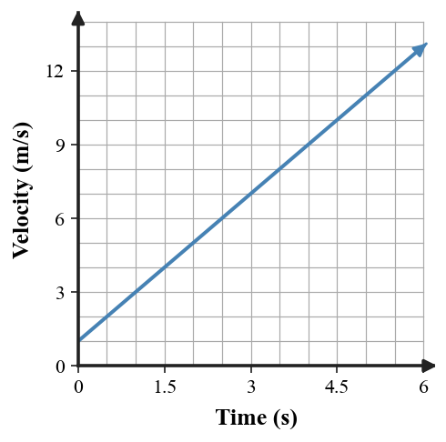

1. In your own words, what physical change does acceleration measure?
2. A cart’s speed increases while it continues east. Is its velocity changing? Is it accelerating?
3. A car slows while moving west. If east is defined positive, what sign can the acceleration have?
4. A satellite follows a curved path at constant speed. Identify the feature of velocity that changes.
5. State one situation with zero acceleration and one with nonzero acceleration.
6. A scooter changes velocity from 5 m/s to 17 m/s in 3 s. Determine acceleration.
7. Use the velocity–time graph. Determine acceleration and describe how the graph shows a constant rate of velocity change.

8. A cart moving east at 14 m/s slows to 2 m/s in 4 s. Take east as positive. Determine acceleration and explain the sign.
9. A toy car turns a corner at a steady 5 m/s. Explain what happens to speed, direction, velocity, and acceleration during the turn.
10. Velocity data are 9, 7, 5, 3, 1 m/s at one-second intervals. Calculate acceleration and classify the motion.
11. Rank these claims from most accurate to least accurate and defend the top claim: (A) acceleration means only speeding up; (B) acceleration occurs whenever velocity changes; (C) constant speed guarantees zero acceleration.
12. A student sees a constant-speed circular motion diagram and concludes the acceleration is zero. Correct the model-based reasoning by explaining what the velocity arrows would do from point to point.
13. Which unit is appropriate for acceleration?
14. A change in velocity of 10 m/s over 5 s gives an acceleration of
15. Which can produce acceleration?
16. When a positive-moving object slows, acceleration is commonly
17. Which graph feature on velocity versus time indicates zero acceleration?
18. Which graph pattern indicates constant positive acceleration?
19. A runner turns east from north at the same speed. The runner
20. If velocity changes by -3 m/s each second, acceleration is